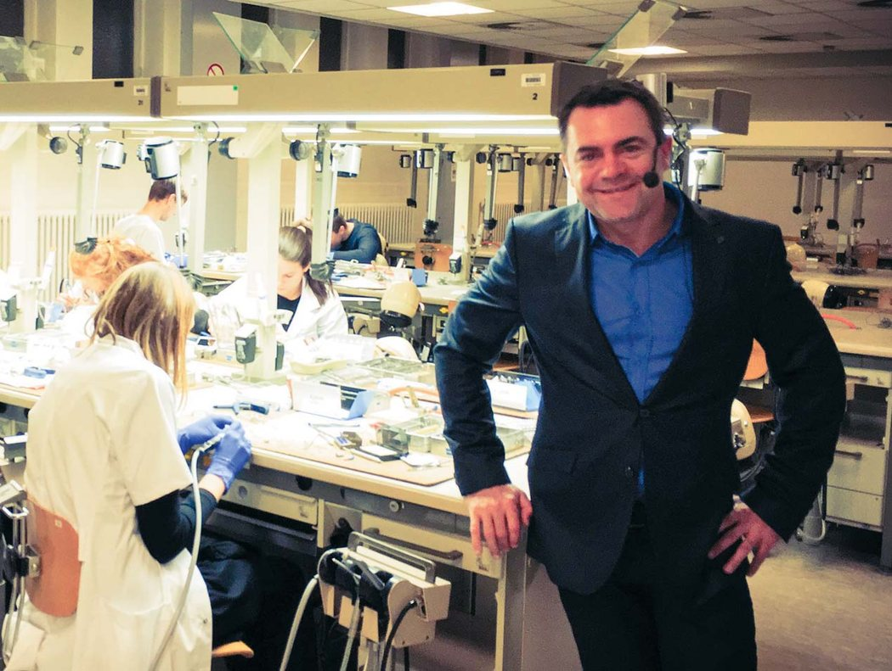
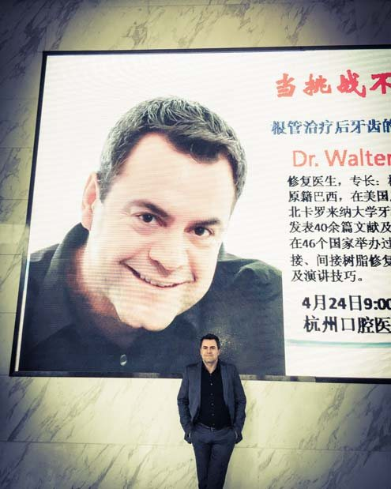
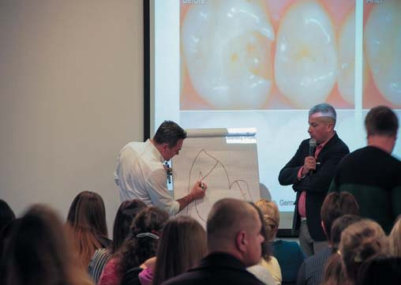
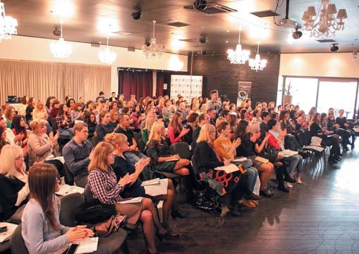
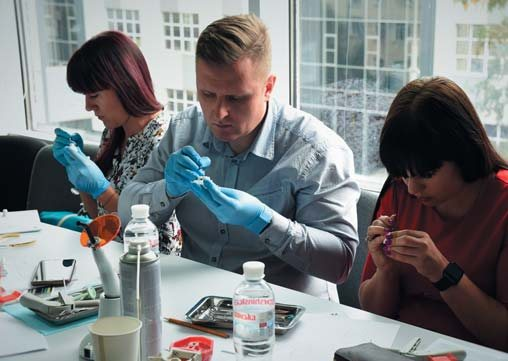
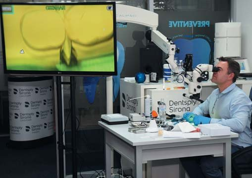
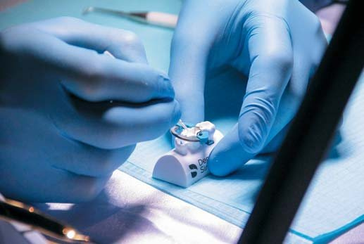
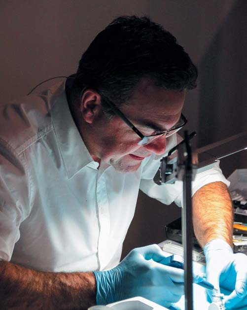
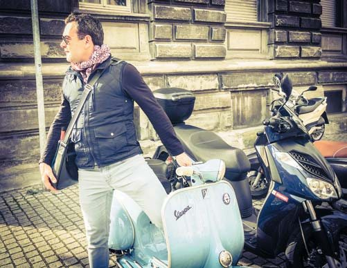

Вітальня · журнал «ДентАрт» 2018 №1
Доктор Вальтер Діас: «Стоматологія, яка робить життя пацієнтів кращим, дарує багато щастя»
Інтерв'ю з доктором Вальтером Діасом,ад'юнкт-професором Школи стоматології Університету Північної Кароліни в Чепел-Хіллі (США). Розмовляв Сергій Радлінський

У Вітальні «ДентАрта» читачі сьогодні зустрінуться зі стоматологом, який свої знання і вміння не вважає капіталом лише для себе, а невтомно ділиться ними з колегами. Доктор Вальтер Діас, ад'юнкт-професор Школи стоматології Університету Північної Кароліни в Чепел-Хіллі (США), виступав з лекціями у півсотні країн світу, ділився своїм клінічним і дослідницьким досвідом застосування адгезивів і композитів, у розробку яких він вніс значний вклад як клінічний менеджер Дентсплай Сірона Ресторатив у Констанці (Німеччина). Маючи практичний досвід роботи у Бразилії, США і Німеччині, вільно володіючи п'ятьма мовами, Вальтер Діас веде регулярні курси з естетичної і функціональної реставрації, а також фотографування у стоматології.
«Потрібно, щоб хтось із професіоналів бачив ваші правильні рішення і ваші помилки»
– Дорогий Вальтере, всі ми, стоматологи, розуміємо, що у професійного успіху в нашій сфері є два крила – майстерність лікаря і сучасні матеріали, які відповідають естетичним і функціональним цілям реставрації. Почнімо з лікарської майстерності. Розкажіть, як Ви отримали свій вражаючий лікарський досвід і що вважаєте головним в оволодінні майстерністю реставрації зубів?
– Гадаю, перше, що потрібне перед тим, як почати практикувати реставрацію, – це прагнення і мотивація. Коли це вже є – потрібна тривала практика! Але дуже важливо, щоб хтось оцінював ваш розвиток, бачив ваші правильні рішення і ваші помилки, давав позитивні і конструктивні рекомендації. Це можуть робити ваші друзі, колеги, вчителі, і сьогодні це набагато простіше, бо у багатьох стоматологів є смартфон, фактично ціла студія в руках, де вони можуть записувати відео, робити знімки... Звичайно, якість зображення не для голлівудських фільмів, але цілком достатня, щоб колеги могли оцінити ваш розвиток.
Також можна використовувати мікроскоп зі значним збільшенням і можливістю фотографування.
Для розвитку навичок, як і раніше, дуже добрим методом є воскове моделювання, і потім треба опанувати матеріалами, які ви хочете використовувати. Можемо говорити про Ceram•X або про CAD/CAM. У моєму випадку ми говоримо про композити. Я сідаю за мікроскоп зі збільшенням, беру натуральні зуби і практикуюся, намагаючись на завершення оцінити результати своєї реставрації. Іноді роблю шліфи реставрованих зубів і розглядаю деталі реставрації в розрізі, іноді знімаю відтиски, практикуючись таким чином і оцінюючи сам себе. Ви повинні отримувати задоволення від того, що робите!
– Справді, mater studiorum repetition, повторення – мати навчання! Тепер про матеріали... Ви берете участь у розробці та виробництві багатьох матеріалів Dentsply Sirona, але який реставраційний матеріал Вам подобається найбільше? І чого ми можемо очікувати від нових матеріалів у найближчому майбутньому?
– Я консультант об'єднаної компанії Дентсплай Сірона і повинен оцінювати багато різних матеріалів різних компаній, але для мене на першому місці завжди композити. Зокрема ті, в розробці яких я брав участь, наприклад Ceram•X Sphere TEC, найкращий композит щодо мануальних характеристик і відтінків. Але я все ще великий шанувальник Filtek Supreme і, як і раніше, використовую IPS Empress Direct. Для мене кращими є саме ці три матеріали. Який з них мені подобається більше? Не знаю, все залежить від ситуації...
Я дуже вражений здатністю Ceram•X до розподілу на поверхні зуба і легкістю в поліруванні, і це справді разюче для такого високоміцного композиту. Не впевнений, чи подобається мені він найбільше, але композитні вініри я роблю саме з цього композиту. Це дуже гарний матеріал для таких робіт, враховуючи компактну комбінацію відтінків: чотири дентинних і три емалевих.
SDR... Та я просто закоханий у нього і вважаю, що це справжня революція у прямій реставрації зубів! Мені також подобається матеріал для відтисків Aquasil ULV, особливо через те, що це гідрофільний силікон. Мало хто знає, що він насправді міцніший, ніж Aquasil LV, незважаючи на те, що має нижчу в'язкість, тобто більш текучий... Він міцніший, тому що у своїй структурі має перехресне зшивання.
Чого нам очікувати від нових матеріалів у найближчому майбутньому? Для початку ми повинні визначити, що розуміти під найближчим майбутнім. Я не передбачаю великих змін у матеріалах протягом найближчих 5 років. Індустрія нині просуває самоадгезивні композити, але я вважаю, що як і самоадгезивні цементи, вони будуть дуже навіть компромісними матеріалами. Може бути більше зручності в реставрації, але буде менше міцності зчеплення з поверхнею. Я все ще не бачу самоадгезивних композитів навіть у найближчі 10 років, протягом яких буде подолано рубіж 35 МПа з'єднання з дентином...

Доктор Вальтер Діас уже виступив з лекціями у 52 країнах!
І все ж у майбутньому, я вважаю, реставраційні матеріали стануть зручнішими для користувача, компактнішими, це будуть матеріали, що працюють у синхронності і синергії. Наприклад, як набори для фіксації, подібні до Core & Post system. Таким чином, ми зможемо працювати швидше і краще.
«Я бачу, що стоматологія в Україні на дуже гарному рівні!»
– Як ад'юнкт-професор Школи стоматології Університету Північної Кароліни в Чепел-Хіллі, що Ви можете сказати про сучасне покоління студентів-стоматологів? Ми можемо їм позаздрити, чи вони повинні позаздрити тим, хто був студентом у попередніх поколіннях?
– Я працюю більше з післядипломниками у Стоматологічній школі Університету Північної Кароліни, і вони не зовсім ті американські студенти, які в подальшому стануть стоматологами у Сполучених Штатах...
Я можу сказати, що стоматологи України, яких я знаю, працюють на вищому рівні стоматології. Я веду лекційну роботу в багатьох країнах і бачу, що в Україні і вимоги до стоматологів дуже високі, і навички українських лікарів є високими. Я не впевнений щодо середньостатистичного стоматолога України, але стоматологи, з якими я працював в «Аполлонії» або на курсах у Києві, відповідають найвищим вимогам і мають дуже гарний рівень передового досвіду.


Доктор Вальтер Діас – досвідчений гід на шляху до вершин майстерності лікаря-стоматолога.
Я тільки-но повернувся з Норвегії, був у Фінляндії, Данії і не бачу жодних відмінностей. Єдине, що можу відзначити, – там стоматологи більше використовують бінокуляри – усе те, що допомагає їм краще бачити зуби і реставрації. Але в іншому я бачу, що рівень стоматології в Україні дуже хороший! Мої вітання!
– Дякуємо! Чи знаєте, що зараз на цьому майстер-класі Ви використовуєте мікроскоп «Сканер» українського виробництва?
– Так, тільки-но мені сказали про це... Насправді я думаю про купівлю ще одного додаткового мікроскопа, і важливо домовитися про його вартість.
Але обговоримо тепер CAD/CAM... Нині є чудові матеріали, і лікарі можуть робити дивовижні речі, про які ми не могли навіть мріяти. Але в той же час ніхто не говорить про основні поняття, такі як крайове прилягання і профіль, які є основними у протезуванні, якщо ви робите коронку. Маючи гарне крайове прилягання і правильний профіль, ми отримуємо здорові навколишні тканини. На сьогодні коронки CAD/CAM трохи програють у точності крайового прилягання: воно не нижче 50 мікрон, але коли ми говоримо про протезування, на порядку денному крайове прилягання 10 мікрон, в той час як ця система передбачає лише 100 мікрон точності.
Уже протягом 20 років ми говоримо про те, що потрібно позбутися від НЕМА (гідроксиетилметакрилату) в адгезивах, тому що він занадто гідрофільний. Тому в наступному році з'явиться новий адгезив Prime & Bond Universal без вмісту НЕМА.


Майстер-клас з реставрації зубів матеріалами Дентсплай, м. Київ, Навчальний центр Представництва Дентсплай Сірона в Україні. Жовтень 2017 р.
Так, існує багато гарних речей – адгезиви стали толерантнішими, значно поліпшені, повністю інтегровані композитні системи, і ви можете тепер зробити набагато кращу реставрацію. Якщо хочете більшого, є можливість використовувати цифрову фотографію. Але з іншого боку, я бачу у колег зниження уваги до базових принципів – анатомії зубів і крайового прилягання.
«Батько сказав, що просто хоче, щоб я був щасливий...»
– Ви стали стоматологом у Бразилії. Що привело Вас у професію, що вплинуло на Ваш вибір стати стоматологом?
– Я хотів бути лікарем з 8 років. Ходив до свого педіатра, він був дуже милим і робив маленькі іграшки, використовуючи порожні картриджі з-під анестезії, маленькі кліпси, еластичні кільця, давав мені ці іграшки.
Дантистом був мій дорогий дядечко, і він досить молодий, так що ми друзі й сьогодні. Він був дуже задоволений своєю професією, і дивлячись на нього, я теж захотів стати стоматологом, проте остаточний вибір мені довелося зробити в 16 років. У мене було кілька варіантів, ким стати: пластичним хірургом, стоматологом або архітектором. Я прийшов до батька і запитав його: «Тату, ти теж хочеш, щоб я був лікарем, як і ти?» І він відповів: «Вальтере, ти маєш вибрати сам, це твоє рішення. Єдине, чого я хочу, – щоб ти був щасливий!» І я вирішив стати стоматологом!
– Нині на світових конференц-майданчиках, крім Вас, на слуху імена багатьох лекторів із Бразилії з оригінальними ідеями: Крістіан Кочман, Ньютон Фал, Луїс Баратьєрі... Що Ви можете сказати про бразильську стоматологію в минулому і тепер?
– Ви ще забули Пауло Кано з його SKYN технікою, яка зробила революцію в CAD/CAM технології. Так, йому пощастило! Але невже це просто везіння, що так багато бразильців очолюють революцію в естетичній стоматології? Я вважаю, що це питання кількості... Адже населення Бразилії 230 мільйонів, і природно, що в країні багато стоматологів! Естетичні вимоги у Бразилії дуже високі і завжди були такими. У Бразилії найбільша кількість пластичних хірургів. Що я можу сказати про бразильську стоматологію в минулому? Вважаю, що рівень і вимоги завжди були дуже високі на Південному Сході країни, в Сан-Паулу.
Але сьогодні в регіоні Сан-Паулу, звідки я родом, бачу деяке зниження рівня підготовки лікарів-стоматологів. У мене є прямий доступ до більшості факультетів у багатьох університетах, і, на мою думку, цей процес є наслідком появи безлічі нових складних дисциплін, яких у нас в минулому не було, таких як імплантація, цільна кераміка. Є ще багато речей, які студенти повинні вивчити, але вони під силу тим, хто вже має певний досвід. Тому я бачу більше можливостей для спеціальних курсів, і це все, що можу сказати про бразильську стоматологію у короткому інтерв'ю.
«У Німеччині середній клас має доступ до стоматології найвищого рівня»
– Нині Ви живете і працюєте в Німеччині, у древньому Констанці, де розташований і завод стоматологічних матеріалів ДеТрей Дентсплай Сірона. Німецька стоматологія по-своєму оригінальна, і читачі хотіли б знати, чи легко іноземцеві бути стоматологом у Німеччині? Що Ви вважаєте важливим і цікавим в організації стоматологічної допомоги у цій країні?
– У Німеччині справді дуже унікальна система охорони здоров'я, витрати на яку покриває держава. Але вона не є ексклюзивною. У вас є можливість надавати допомогу в приватній практиці за згоди пацієнта, який може оплатити ці додаткові послуги. Я працював у США, і у мене не було такої можливості, тому що, працюючи з пацієнтами за страховкою, ми повинні були дотримуватися певного плану лікування від страхової компанії. Іноді доводиться робити коронку, тому що ти не можеш взяти трохи більше грошей за композит. У Німеччині ж у вас розв'язані руки, і це призводить до цікавих речей... Наприклад, держава оплачує внутріканальне медикаментозне лікування, пацієнти за нього не платять зі своєї кишені, і тому Німеччина є провідною країною за кількістю відвідувань з медикаментозним лікуванням каналів. Це дуже типово для ендодонтичного лікування у цій країні, воно триває 3-4 сеанси, чого немає в інших країнах. Адже якщо канал сухий – ви його просто обтуруєте! Це короткий прийом. Але в Німеччині лікарі все ще розтягують лікування і роблять більше тимчасових внутріканальних вкладень, бо держава за це платить.
У кожної країни є свої цікаві деталі і особливості. Те, що я вважаю важливим і цікавим в організації стоматологічної допомоги у Німеччині, полягає в тому, що середній клас має доступ до стоматології найвищого рівня. У них є доступ до дуже якісної стоматології, уряд добре попрацював над цим.
Але я не бачу в Німеччині, щоб стоматологи ставали мільйонерами, як у Сполучених Штатах! У країні дуже високий рівень життя, і це дозволяє більшій кількості людей отримати доступ до висококласних стоматологів. Але якщо ви хочете стати стоматологом-мільйонером, ви маєте вирушити у Сполучені Штати, а не в Німеччину. Якщо ви просто хочете мати гарне життя, то Німеччина теж дуже добрий варіант для цього.
– Кілька слів про Ваш навчальний центр у Констанці...
– Ну, він дуже маленький. Нині, з усією цією роботою, розробками, пацієнтами та моїми дітьми, я проводжу лише два курси на рік. У мене є п'ять місць, обладнаних мікроскопами, де мої учні тренуються створювати анатомію на натуральних зубах з використанням композитів. Це дуже інтенсивна і дуже цікава система навчання, і я нею задоволений.
– З інтернету відомо, що Ви читаєте лекції на п'яти мовах у 35 країнах. Які головні теми Ваших лекцій і на чому фокусуються Ваші інтереси зараз як лектора і викладача?
– Насправді я об'їхав з лекціями вже 52 країни і дуже цим пишаюся. Моїми головними темами сьогодні є реставрації класу II і прямі реставрації передніх зубів. Ще я хотів би розкрити тему композитних коронок безпосередньо біля крісла пацієнта. На мій погляд, це вражаюча техніка, про яку повинен знати кожен стоматолог. Але мені здається, що промисловість не розвивається в цьому напрямку. Можливо, у майбутньому ми розкриємо цю тему. На сьогодні мій інтерес полягає в техніках «біля крісла»: вважаю, ми можемо багато чого зробити, використовуючи силіконові матеріали, і навіть із застосуванням гіпсових технологій.


Навчати інших можна тільки тоді, коли сам невтомно практикуєшся...
Я також цікавлюся непрямими реставраціями і думаю, що ми можемо робити дивовижні речі, в тому числі з використанням CAD/CAM. Ми можемо комбінувати різні техніки – прямі, непрямі і CAD/CAM. І тоді це буде досконала стоматологія.
– Спілкуючись з багатьма стоматологами, чи бачите Ви різницю в рівнях стоматології та вподобаннях стоматологів при виборі методу реставрації зубів у залежності від країни чи континенту?
– Абсолютно! Абсолютно! Кожне місце має свої особливості, і передусім у використовуваних матеріалах... Якщо ви поїдете в Німеччину, там більшість стоматологів застосовує адгезивну систему Syntac фірми Ivoclar. А якщо ви поїдете у Сполучені Штати, то побачите, що використовують Clearfil SE Bond, і там це єдиний адгезив.
Поточні витрати на стоматологічну практику також мають велике значення. У Сполучених Штатах, наприклад, вартість часу, наша вартість у практиці, щоб підтримувати існування клініки, дуже висока, це дуже дорого... Наприклад, якщо ви отримуєте металокерамічну коронку і вона не прилягає добре, ви не намагаєтеся її підкоригувати, це того не варте. Ви знімаєте інший відбиток. Якщо втручання незначні, все в порядку, ви їх робите. Але якщо на втручання знадобиться більше десяти хвилин, вам буде дешевше зробити ще одну, нову коронку. Тому зазвичай я бачу величезні відмінності у стоматології в кожній країні.
– Але хіба глобалізація і Facebook не стирають усі межі й відмінності?
– Я не бачу, що це відбувається зараз. Я дивлюся на американців, країну, в якій ми запускаємо виробництво Ceram•X. Я дуже пишаюся, що був частиною цього проекту...
– «Оригінальні матеріали» з Німеччини?
– Так, звичайно, це 100% європейський продукт і технологія. Але тепер ми запустимо його в Америці, і він буде називатися Spectrum TPH ST за технологією Sphere TEC. На допомогу цьому запуску виробництва я повинен дати деякі відгуки для опініон-лідерів в Америці, і вони попросили мене змінити відео, де я виконую пошарову техніку відновлення оклюзійної поверхні! Вони кажуть: «Ми хочемо техніку препарування і пломбування».
Ви можете всюди побачити, що сучасний стандарт для композитів – це оклюзійна пошарова техніка. Один шар або кілька шарів – не має значення, але дуже акуратне внесення оклюзійних порцій. А на американців це не діє, і вони йдуть іншим шляхом – використовують бор!!! І тому я не бачу стирання всіх відмінностей і кордонів на сьогодні.
Semper in motu – завжди в русі!

Semper in motu – завжди в русі!
– Як Ви гадаєте, Ваші діти стануть стоматологами? Інакше кажучи, Ви хотіли б, щоб вони стали стоматологами?
– Я хотів би, щоб вони стали стоматологами, але ніколи не буду їх змушувати. Усе залежатиме від них! Так, я хотів би, щоб вони стали стоматологами, тому що вважаю, що це чудова професія. Коли я бачу щастя і задоволення пацієнтів, бачу, як змінюється їхнє життя від результатів моєї роботи, – це робить і мене кращим. Я почуваюся так добре від цього!
– Ваші діти тренуються потроху у Вашому навчальному центрі?
– Так, вони люблять працювати із силіконовим відтискним матеріалом, робити з нього кульки. Тепер я думаю про Гелловін, може, я зроблю для них якісь особливі вампірські зуби. Мені дуже хотілося б показати їм CAD/CAM, CEREC, який буде у мене найближчим часом, але гадаю, поки що для них це занадто складно.
– Ваші побажання читачам «ДентАрта»...
– Боже мій! Я дуже поважаю це видання і всіх стоматологів, які роблять свій внесок у розвиток стоматології і читають цей журнал. Я бажаю колегам, щоб вони продовжували дотримуватися принципів досконалості, продовжували практикувати і давали зворотний зв'язок нам і вам про ті чудові речі, які вони можуть зробити за допомогою адгезивної стоматології. А також бажаю колегам багато щастя! Стоматологія, яка робить життя пацієнтів кращим, дарує багато щастя!
– Спасибі, дорогий Вальтере, від імені наших читачів! І Вам щастя!
Розмовляв Сергій Радлінський.